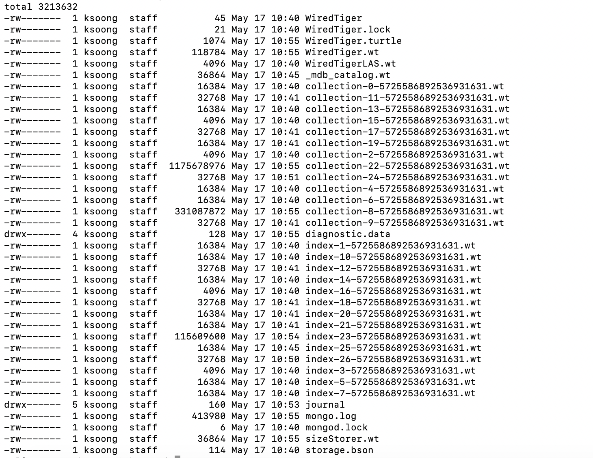
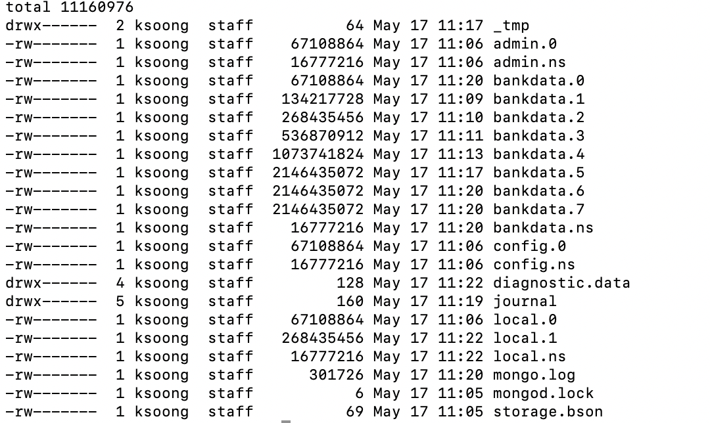

MongoDB Q & A
Table of Contents
性能调优
应用设计模式
-
只更新需要更新的字段 - 不建议取出整个文档，更新某个字段，然后保存整个文档
-
避免不存在的查询 - 不存在的字段会导致全表扫描
-
Use covered queries when possible.
-
Test every query in your application with explain()
-
Update multiple array elements in a single operation
-
Avoid scatter-gather queries
-
Choose the appropriate write guarantees
-
Choose the right read-concern
-
Use causal consistency where needed
-
Use the most recent drivers from MongoDB
-
Ensure uniform distribution of shard keys
-
Use hash-based sharding when appropriate
数据模型设计 & 索引
-
Avoid large documents
-
Avoid unnecessarily long fifield names
-
Use caution when considering indexes on low-cardinality fifields
-
Eliminate unnecessary indexes
-
Remove indexes that are prefifixes of other indexes
-
Use a compound index rather than index intersection
-
Use partial indexes
-
Avoid regular expressions that are not left anchored or rooted
-
Use index optimizations available in the WiredTiger storage engine
-
Understand any existing document schema – MongoDB Compass
-
Identify & remove obsolete indexes
磁盘 I/O
-
Readahead size should be set to 0 for WiredTiger
-
Use XFS fifile systems; avoid EXT3
-
Disable access time settings
-
Don’t use Huge Pages
-
Use RAID10
-
Use multiple devices for different databases – WiredTiger.
-
Implement multi-temperature storage & data locality using MongoDB Zones
**
**
Q & A
BSON Vs JSON
Q1: Why does MongoDB use BSON rather than JSON?
-
BSON includes metadata to describe a document/object
-
BSON supports more data types than JSON
Q2: Which writes are atomic in MongoDB 4.0?
-
An update to a single document in a replica set
-
An update to multiple documents in a replica set using transactions
-
An update to a single document in a sharded cluster
Q3: In order to ensure that you can maintain high availability in the face of server failure, you should use which of the following MongoDB feature?
Replication
Q4: Which of the following are valid types in BSON?
-
Decimal128
All JSON Types: Object, String, Array, Boolean, Null, Number All BSON Types: Object, String, Array, Boolean, Null, Double, Decimal128, 32-bit integer, 64-bit integer, Min key, Max key, Binary data, Undefined, ObjectId, Date, Regular Expression, DBPointer, JavaScript, Symbol, JavaScript (with scope), Timestamp
CRUD
Q1: What’s means of $or operator?
The $or operator means that any document that satisfies one of the conditions will be retrieved.
Q2: What’s means of $slice operator?
The $slice projection operator is used to control how many elements of an array will be returned after fetching it.
Q3: On which of the following CRUD operations can you specify a write concern?
-
db.collection.insertOne()
-
db.collection.updateMany()
Q4: What’s means of $addToSet operator?
Add an element to array.
Q5: What’s the relation between $set and $unset?
Q6: What’s the means of db.sayings.find( {$text: {$search: "fact find"}})
text filed contains neither "fact" nor "find".
Indexes
Q1: Which of the following must be true for a query to be a covered query?
-
All fields used in the selection filter of the query must be in the index that the query uses
-
All fields returned in the results must be in the index that the query uses
All fields used in the selection filter of the query must be in the index, so the system can find the documents that satisfy the selection filter without having to retrieve the document from the collection. All fields returned in the results must be in the index, so again there is no need to retrieve the full document. A common mistake is not to provide a projection that filters out the field _id, which is returned by default. If the _id field is not a field in the index definition, it is not available, and the query system will need to fetch the full document to retrieve the value.
Q2: You have created the following index on the foo collection:
db.foo.createIndex( { a : 1, b : -1, c : -1, d: 1 } )Which of the following queries will be able to fulfill the query without an in-memory sort (i.e., it’s able to use the index to sort)?
-
db.foo.find( { a : 100 } ).sort( { b : 1, c : 1 } )
-
db.foo.find( { a : 200, b : { $lt : 100 } } ).sort( { b : 1 } )
Recall that compound indexes should be built in the order of equality, range, sort for common operational query patterns. Also recall that as long as the query uses all keys of a compound index or a combination of index prefixes, it will make use of the existing index.
Q3: Suppose you have a collection "sample" with an index created as follows.
db.sample.createIndex( { "foo" : -1 } )For which of the following queries can MongoDB efficiently look at only a subset of the index entries, rather than all of the index entries?
-
db.sample.find( { "foo" : /^c.*d/ } )
-
db.sample.find( { "foo" : /^e.*f/ } )
Q4: Which of the following statements are true of unique indexes?
-
The "unique" constraint on an index ensures that no two (or more) documents can share a value for that field in a collection
-
Hashed indexes cannot be unique.
Unique indexes have certain properties and restrictions that you should be familiar with. For example, they ensure that no documents have the same data at the same key that carries a unique index, and you may not specify a unique constraint on a field that is specified as a hashed index.
Q5: Which of the following is true of covered queries?
-
MongoDB can satisfy covered queries using only index keys.
Covered queries are the best queries! The underlying index supports the entire query, so no document information is required to be fetched from disk. With a covered query, you are servicing the operation entirely from the index, which is usually faster than examining each document.
Q6: You have the following index on the toys collection:
{
"manufacturer" : 1,
"name" : 1,
"date" : -1
}Which of the following queries are able to use the index? Check all that apply.
-
db.toys.find( { manufacturer : "Matteo", name : "Barbara", date : "2018-07-02" } )
-
db.toys.find( { name : "Big Rig Truck", date : "2018-02-01", manufacturer : "Tanko" } )
-
db.toys.find( { date : "2018-03-01", manufacturer : "Loggo", name : "Brick Set" } )
Aggregation
Q1: Which of the following statements are true about the $match pipeline stage?
-
You should use it as early as possible in the pipeline.
-
It can be used as many times as needed.
-
It has a syntax similar to find() commands.
Replication
Q1: What settings can be controlled by rs.reconfig()?
-
Priority for each replica set member
-
Which replica set members are hidden
Q2: What is the principal advantage of having a delayed replica set member?
-
It provides a window of time to recover from an operator error.
If you have a delayed member in your replica set, for example, a delay of one hour, it will take one hour before changes on the Primary are replicated to this member. If a user were to drop a collection or database on the Primary, you would have one hour to go to this delayed member to retrieve the destroyed data. You can also query older versions of your documents, however, you can't choose a historical version to retrieve as you only get the one that existed one hour ago.
Q3: Which of the following is a correct definition for idempotence?
-
If an action may be performed multiple times and have the same effect as if it had been performed once, it is idempotent. For example, $set: {a: 3} is idempotent, but $inc: {a: 1} is not.
The desire for the Oplog to be idempotent is to ensure that if the server needs to resume applying Oplog entries it will always get to the same end state, regardless if it reapplies some that entry already applied. For example, if the server crashes applying oplog5 and it is difficult to identify if oplog5 is applied, then idempotency let you restart at oplog4 without issues. Another goal is to have the new state of the document be independent of a previous state. This means all operators like $em, which relies on the previous value to determine the new value, needs to be transformed to the actual values seen. For example, if an increment operation results in modifying a field from the value '4' to the value '5', the operation should be transformed to simply set '5' on that field. Replaying this operation many times always lead to the same result.
Q4: Which of the following describe the primary reasons MongoDB supports replication?
-
To provide high availability
-
To prevent downtime in case of a disaster at a data center
Q5: Which of the following are true of the Oplog entries created as a result of the CUD operations in MongoDB?
-
A single write query may result in multiple oplog entries.
-
Each oplog entry specifies whether a document is inserted, updated, or deleted.
When a write operation modifies many documents on a Primary, the Primary needs to insert a separate entry in the Oplog for each modified document. This is the only way the system can ensure the Oplog remains omnipotent. A single command writing to many documents, running on a secondary which fails in the middle of the command, could not be guaranteed to be replayed correctly.
Q6: Which of the following are best practice reasons to read from secondaries?
-
To offload batch processing work from the primary (e.g., data analytics)
-
To provide local reads in geographically distributed replica sets
Q7: A replica set is under a moderate write load. A new data bearing member with no data is added to an existing replica set. Which of the following might be fetched by the new member before it can become a secondary?
-
Entries in the primary’s oplog
-
BSON documents from the primary’s database(s)
When the new member is added, it will undergo what is called an initial sync. During that phase, the Secondary will start pulling all the documents from the Primary. In parallel of pulling the documents, the Secondary will also pull the Oplog entries, which reflect modifications done on those documents, or new documents being inserted. Applying those Oplog entries after it fetched all documents will ensure a coherent state of the documents. This guarantee is based on the omnipotence of the operations put in the Oplog. Write queries, as received by the Primary, are not guaranteed to be omnipotent, and may need to be transformed. For example, a write operation modifying many documents is not omnipotent and will be transformed to a series of writes, one per modified document.
Sharding
Q1: In a sharded cluster, which of the following indexes must contain only unique values?
-
The _id index
Q2: An insufficiently granular (“low cardinality”) shard key can result in which type of problems?
-
Large chunks that cannot be split.
Documents with the same values for their shard key will be colocated in the same chunk. If a lot of documents have the same values, this may result in a very big chunk. The system is unable to split this chunk as there is no value between the bounds of the chunk. For example if a shard key is the name of a country, all documents with USA are placed in the same chunk, and this chunk can't be split, as there is no other value between USA and USA. Chunks that can not be split are called jumbo chunks.
Q3: When a chunk is in flight from one shard to another during a migration process, where are reads to that chunk directed?
-
To the shard from which it is being migrated
hen a chunk is in flight, reads and writes from the application can still access the documents in that chunk. Modifications on documents are propagated to the shard where it is migrated. Until the chunk is fully migrated, the shard (donor) that is sending it to another shard (receiver) is the only location where the all documents are present in their latest form. For that reason, the donor shard is processing the reads.
Q4: In which of the following situations can we assume sharding will be an effective strategy?
-
A single MongoDB instance cannot keep up with your application’s write load and you have exhausted other options.
-
our data set is too big to fit in a single MongoDB instance.
-
You would like to improve read performance for your application.
-
The data set is taking too much time to backup and restore.
Q5: Which of the following are traits of a hashed _id as a shard key, relative to an unhashed _id?
-
Inserts on auto-generated ObjectId’s will be distributed across shards
-
Range queries (to find documents created on a particular week, for example) may be less efficient
Q6: In a sharded collection, which of the following is true of the primary shard?
-
It holds the unsharded collections for the database.
For a given database in a cluster, not all collections may be sharded. As a matter of fact, you are likely to shard only the very large collections. For the ease of management and to provide features like $lookup across collections, it makes sense to group all non-sharded collections together, and this location is referred to as the Primary Shard for this given database. Other databases in the cluster are likely to have a different Primary Shard to level the space and load between the shards. As a note, the term Primary Shard is used here, so be careful not to confuse this notion with the Primary replica in a replica set.
Q7: When should you pre-split data for a sharded cluster?
-
When you expect to set and leave the balancer inactive
-
When you are performing a bulk initial load
If you are using a hashed shard key, or know the distribution of your data very well such that you can arrange for a distribution of data to be equilibrated between shards, you may want to pre-split the data and not use the balancer. Please note the balancer is there to help by doing the migrations of chunks when needed. A common mistake is to insert a lot of data sorted by the shard key. For example, migrating from a SQL database with the data sorted by userid, and using the same userid field as your shard key. By doing so, you will insert on a single shard (the one with the upper chunk), and then those documents are likely going to migrate to another shard later, doubling the number of writes. Alternatively, if you pre-split the collection across the values of userid, documents will not be written twice. Note that this is still not the optimal way to load the documents. For better performance, have parallel queries inserting each on one shard within the range of documents belonging to the chunks on a given shard.
Q8: In the context of a sharded cluster, which of the following is true of chunks?
-
Chunks may exist that contain no documents
-
Chunk ranges are inclusive of the lower boundary and exclusive of the upper boundary
-
The ranges of two chunks do not overlap
-
Every chunk is assigned to a particular shard
Application Administration
Q1: Which of the following is true about MongoDB’s Role-Based Access Control (RBAC) system?
-
A role can inherit privileges from other roles associated with that database
role-based access control is only available once you turn on authorization and have user accounts. You can run the cluster without any user account and privileges, however, it is strongly recommended to enable authentication and authorization. While creating a user, you can assign a role or many roles at the creation time. As a matter of fact, this would be the recommended way, as it makes it easier to keep a tight control on all accounts. MongoDB associates users and their roles to different databases, however all the information about users and roles is kept in the admin database.
Q2: You are required to create a user for your organization that manages all other users. Which role would be required for this user?
-
userAdminAnyDatabase
In order to create a user, you need to be able to perform actions such as createUser and changePassword. These actions are available to the role userAdminAnyDatabase. readWriteAnyDatabase comes close but it does not have the ability to write to the system.users collection. It is used to manage users in the other databases.
Server Administration
Q1. Which of the following must you do before backing up a running sharded cluster using a file system snapshot?
-
Disable the balancer
One of the requirements for doing a backup of a sharded cluster is to ensure that no group of documents (chunks) are getting migrated by one shard to another shard while you are copying the data for the given shard. For this reason, you need to ensure the balancer is disabled while you take the file system snapshots.
Q2: What are the uses of the mongo shell?
-
Allow people to use MongoDB with a simple command line interface.
-
Perform administrative tasks.
Q3: What is an indication that your disk speed is causing a performance bottleneck?
-
High IO wait times in the CPU stats
IO wait is the key piece of information. That means the disk is unable to promptly take all the requests sent to it. SSD are usually faster than spinning disks, however you can have a system performing very well with spinning disks if they are not used at full capacity. High number of page faults and Resident memory approaches physical memory are usually symptoms that the system does not have enough physical memory.
Q4: You have a three-member replica set. If your secondaries are falling behind, which of the following are plausible causes?
-
Network issues
-
Slower hardware on the secondaries
Network issues may lead to the replication subsystem not being able to quickly get the changes happening on the Primary resulting in replication lag. Having faster hardware for the Primary can also lead to replication lag. Imagine the Primary operating at full capacity. While this is happening, the secondaries with slower hardware may not be able to apply all the writes happening on the Primary at the same speed.
Q5: In MongoDB, the WiredTiger storage engine provides concurrency at what level?
-
Document level concurrency
The WiredTiger storage engine supports document-level concurrency, allowing multiple documents from the same collection to be written to, simultaneously.
Q6: Which of the following is a feature of the WiredTiger storage engine component in MongoDB?
-
Compression of data files
-
Index prefix compression
-
Document level concurrency
-
A dedicated cache of RAM
Q7: Which of the following are compression algorithms available for WiredTiger in MongoDB 4.0?
-
zlib
-
snappy
Q8: Which of the following is true of the file system cache when using WiredTiger as your storage engine?
-
The size of the File System Cache is tunable
-
The File System Cache is used by MongoDB
Q9: What is the following are features of zlib compression with WiredTiger?
-
Disk I/O will probably be lower with zlib than without compression.
Q10: What is the command for exporting data into a CSV file format from a MongoDB server
mongoexport --host localhost:27017 -d catalog -c shoes --type=csv -f fields -o shoes.csv
Q11: You would like to store a .gif file in MongoDB using GridFS. Which of the following can help you to do this?
-
mongofiles
Q12: Which of the following is true regarding the explain() method?
-
The explain() method provides information about which query plan would be selected for a given query
The default mode for the explain() method is to report which candidate plans would be executed, without doing the execution. The reason to default to this behavior is not to add an additional load on a server unless it is explicitly requested. The explain() method will give some info about indexes but only for the ones in the considered plans. To get the full information about all the indexes, the recommended method is db.collection.stats() or the Aggregation Framework stage $indexStats.
Journals
===
Application and Server Administration
1. rotate log files
db.adminCommand({logRotate: 1})2. check the log files
$ ls -l *.log*
-rw------- 1 ksoong staff 1977 May 18 15:44 mongo.log
-rw------- 1 ksoong staff 268257 May 18 15:44 mongo.log.2019-05-18T07-44-583. set iloglevel to 0, and Profiling Level to track more than 50 ms opration
---
db.adminCommand({setParameter: 1, logLevel: 0})
use largeFiles
db.setProfilingLevel(1, {slowms: 50})
----4. execute insert_large_array.json
$ ./insert_large_array.json5. check the profile message
MongoDB Enterprise repl-1:PRIMARY> show profile
insert largeFiles.data 61ms Sat May 18 2019 16:39:50
command:{
"insert" : "data",
"ordered" : true,
"lsid" : {
"id" : UUID("57ebcf4d-4cf5-4914-85aa-e0c927be70e5")
},
"$clusterTime" : {
"clusterTime" : Timestamp(1558168789, 1),
"signature" : {
"keyId" : NumberLong("6691838181387534337"),
"hash" : BinData(0,"FJxM1pQaObNVahBwrPceyfQkqYY=")
}
},
"$db" : "largeFiles",
"$readPreference" : {
"mode" : "primary"
}
} ninserted:1 keysInserted:1 numYield:0 locks:{
"Global" : {
"acquireCount" : {
"r" : NumberLong(1),
"w" : NumberLong(1)
}
},
"Database" : {
"acquireCount" : {
"w" : NumberLong(1)
}
},
"Collection" : {
"acquireCount" : {
"w" : NumberLong(1)
}
}
} responseLength:230 protocol:op_msg client:127.0.0.1 allUsers:[ { "user" : "root", "db" : "admin" } ] user:root@admin6. check more profile data
db.system.profile.count()
db.system.profile.findOne()
db.system.profile.findOne({op: "query"})
db.system.profile.find({responseLength: {$gt: 1000}}).count()
db.system.profile.find({ts: {$gt: ISODate("2019-05-18T08:36:38.615Z"), $lt: ISODate("2019-05-18T08:39:00.935Z")}}).sort({millis: -1})7. serverStatus check basic performance info
db.serverStatus().connections
db.serverStatus().locks
db.serverStatus().globalLockServer Tools
1. sample a reddit.json
$ curl -o reddit.json --insecure https://www.reddit.com/r/technology/.json2. import reddit.json
$ mongoimport --port 27000 -u root -p mongo --authenticationDatabase admin --collection technology -db reddit --file reddit.json3. export reddit data to csv
$ mongoexport --host "repl-1/localhost:27000,localhost:27001,localhost:27002" -u root -p mongo --authenticationDatabase admin -c technology -d reddit --type=csv -f "bar,foo,zoo" -o reddit.csv4. dump the reddit data as bson
$ mongodump --host "repl-1/localhost:27000,localhost:27001,localhost:27002" -u root -p mongo --authenticationDatabase admin -c technology -d reddit --out reddit.dump5. start a new mongodb and restore data
$ mongod --dbpath db/ --logpath db/mongod.log --port 27017 --fork --auth
$ mongo admin --port 27017 --eval 'db.createUser({user: "root", pwd: "mongo", roles: [{ role:"root", db: "admin" }]})'
$ mongorestore --host "localhost:27017" -u root -p mongo --authenticationDatabase admin reddit.dump/6. use bsondump convert bson to json
$ bsondump --outFile collection.json reddit.dump/reddit/technology.bsonStorage Engines
| Items | MMAPv1 | WiredTiger |
|---|---|---|
Locks/Concurrency |
collection level in 3.0, databse level between 2.2 - 2.6 |
document level |
Journaling |
ensure writes are atomic |
ensures writes make it to disk between checkpoints |
Data Compression |
not support |
support snappy and zlib compression algorithms |
Disk fragmentation and performance cost |
High |
Low |
| Items | MMAPv1 | WiredTiger |
|---|---|---|
number of document inserts |
10m |
10m |
Total disk usage(3 nodes in replica set) |
17G |
5.2 GB |
Disk usage per node |
5.7G |
1.7G |
write per seconds |
16k |
16k |
every total time on bankdata.customers |
200 ms |
200 ms |
system load avg |
6.82, 6.40, 4.68 |
8.02, 6.07, 4.71 |
The scripts in above comparison:
//创建数据库存储文件及内部通信加密文件
$ mkdir -p ~/tmp/r{0,1,2}
$ openssl rand -base64 755 > ~/tmp/keyfile
$ chmod 400 ~/tmp/keyfile
//启动
$ for i in 0 1 2 ; do mongod --dbpath ~/tmp/r$i --logpath ~/tmp/r$i/mongo.log --port 2700$i --fork --auth --keyFile ~/tmp/keyfile --replSet repl-1 ; done
//初始化
$ mongo admin --port 27000 --eval "rs.initiate()"
//创建安全登录账户
$ mongo admin --port 27000 --eval 'db.createUser({user: "root", pwd: "mongo", roles: [{ role:"root", db: "admin" }]})'
//添加备节点
$ mongo admin --port 27000 -u "root" -p "mongo" --eval 'rs.add("localhost:27001")'
$ mongo admin --port 27000 -u "root" -p "mongo" --eval 'rs.add("localhost:27002")'
$ ./engines_pef.py
$ ./engines_pef_read.py
$ mongostat --port 27000 --discover -u root -p mongo --authenticationDatabase admin
localhost:27000 15228 *0 *0 *0 17 32|0 5.0% 62.5% 0 9.84G 1.56G 0|0 1|0 2.10m 6.86m 18 repl-1 PRI May 17 10:53:47.599
localhost:27001 *17461 *0 *0 *0 0 12|0 12.4% 72.8% 0 10.1G 1.39G 0|0 1|0 1.71k 61.6k 10 repl-1 SEC May 17 10:53:47.709
localhost:27002 *17547 *0 *0 *0 0 13|0 5.6% 69.1% 0 10.2G 4.97G 0|2 2|0 1.76k 63.3k 10 repl-1 SEC May 17 10:53:47.709
$ mongotop --port 27000 -u root -p mongo --authenticationDatabase admin
ns total read write 2019-05-17T10:54:14+08:00
bankdata.customers 285ms 0ms 285ms
local.oplog.rs 95ms 95ms 0ms
//switch to mmapv1
$ pkill mongod
$ rm -fr ~/tmp/r*
$ mkdir -p ~/tmp/r{0,1,2}
$ for i in 0 1 2 ; do mongod --dbpath ~/tmp/r$i --logpath ~/tmp/r$i/mongo.log --storageEngine mmapv1 --port 2700$i --fork --auth --keyFile ~/tmp/keyfile --replSet repl-1 ; done
//初始化
$ mongo admin --port 27000 --eval "rs.initiate()"
//创建安全登录账户
$ mongo admin --port 27000 --eval 'db.createUser({user: "root", pwd: "mongo", roles: [{ role:"root", db: "admin" }]})'
//添加备节点
$ mongo admin --port 27000 -u "root" -p "mongo" --eval 'rs.add("localhost:27001")'
$ mongo admin --port 27000 -u "root" -p "mongo" --eval 'rs.add("localhost:27002")'
$ ./engines_pef.py
$ ./engines_pef_read.py
$ mongostat --port 27000 --discover -u root -p mongo --authenticationDatabase admin
localhost:27000 15172 *0 *0 *0 238 240|0 0 21.9G 1.06G 2134 0|0 0|0 6.13m 16.3m 18 repl-1 PRI May 17 11:18:30.041
localhost:27001 *13298 *0 *0 *0 0 12|0 0 21.8G 4.99G 2165 0|0 1|0 1.64k 34.0k 10 repl-1 SEC May 17 11:18:29.110
localhost:27002 *13316 *0 *0 *0 0 12|0 0 21.8G 4.98G 2022 0|0 0|0 1.64k 34.3k 10 repl-1 SEC May 17 11:18:29.110
$ mongotop --port 27000 -u root -p mongo --authenticationDatabase admin
ns total read write 2019-05-17T11:19:33+08:00
bankdata.customers 344ms 0ms 344ms
local.oplog.rs 108ms 108ms 0ms
admin.system.keys 0ms 0ms 0ms
